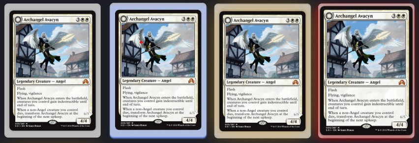

Spelregels
Kaarten

- Commons (wit): Veelvoorkomende kaarten, de basis van elk deck.
- Uncommons (blauw): Iets zeldzamer en vaak sterker dan commons.
- Rares (geel): Zeldzame kaarten met unieke krachten en effecten.
- Mythic Rares (rood): Extreem krachtige en zeldzame kaarten.
Deck
- Elk deck heeft een naam en een achtergrondafbeelding.
- Een deck bevat maximaal 60 kaarten.
- Elke kaart mag maximaal 4 keer in een deck zitten
- De gemiddelde mana cost wordt berekend
- Je kunt je decks bekijken, inclusief de achtergrond en naam.
- Kaarten kunnen verwijderd of aangepast worden.
Drawtest
- Druk op trekken en zie het kaart.
- Pas je strategie aan en optimaliseer je deck.
Terug naar home